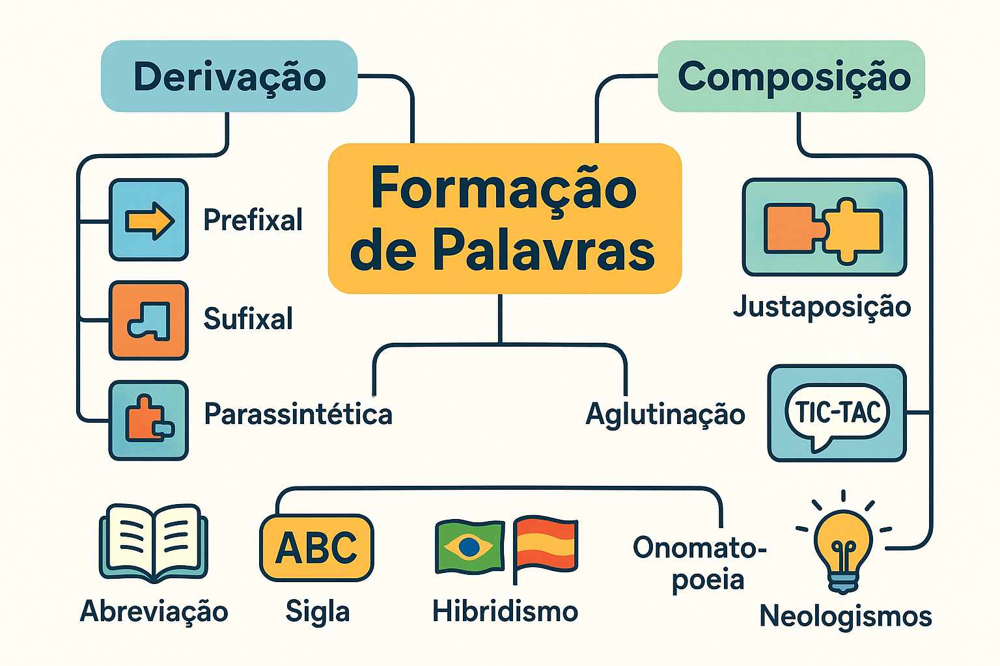

Processos de Formação de Palavras: derivação, composição e outros
As línguas naturais são organismos vivos em constante renovação cultural e tecnológica. Diante das transformações históricas, dos avanços científicos e das novas demandas comunicativas das sociedades contemporâneas, o inventário de vocábulos de um idioma não pode permanecer estático. A Língua Portuguesa dispõe de um rico conjunto de mecanismos gerativos internos que capacitam os falantes a criarem palavras novas com base em matrizes mórficas preexistentes.
Esses mecanismos constituem os processos de formação de palavras, objeto central da chamada Morfologia Lexical ou Derivacional. Ao contrário da flexão — que apenas produz variações de gênero, número ou tempo para ajustar a concordância na frase —, os processos de formação criam novos itens no léxico (novos verbetes de dicionário), ampliando o poder de nomeação, descrição e abstração da língua.
Neste guia acadêmico e analítico, você examinará exaustivamente os dois grandes eixos formadores do português — a derivação (prefixal, sufixal, parassintética, regressiva e imprópria) e a composição (justaposição e aglutinação) —, além de processos secundários e contemporâneos como o hibridismo, a abreviação vocabular, as siglas, as onomatopeias e a neologia estilística e técnica.

A dinâmica do léxico: Palavras Primitivas e Derivadas
Na arquitetura lexical, as palavras agrupam-se etimologicamente em famílias. Uma palavra diz-se primitiva quando não deriva de nenhuma outra palavra preexistente na própria língua (ex.: pedra, sol, mar). A partir dessa base matricial surgem as palavras derivadas (ex.: pedregulho, solar, marítimo) ou compostas (ex.: quebra-mar).
A vitalidade formadora da língua portuguesa
“A formação de palavras reflete a capacidade criadora do idioma. Por meio da combinação rigorosa de morfemas, a língua atende às necessidades de expressão de novos conceitos, mantendo uma perfeita coerência entre a tradição histórica e a inovação lexical” (BECHARA, 2019, p. 345).
1. Derivação: criação por acoplamento ou alteração mórfica
A derivação consiste na formação de uma nova palavra a partir de uma única base lexical primitiva, por meio do acréscimo de afixos, supressão de fonemas ou mudança funcional de classe. Divide-se em cinco tipos fundamentais:
1.1 Derivação Prefixal (Prefixação)
Ocorre quando um prefixo é incorporado antes do radical primitivo. O prefixo agrega uma nova nuance semântica à palavra original, mas geralmente preserva a sua classe morfológica originária:
- in- (negação) + feliz (adjetivo) = infeliz (adjetivo);
- re- (repetição) + fazer (verbo) = refazer (verbo);
- des- (inversão) + leal (adjetivo) = desleal (adjetivo);
- sub- (inferioridade) + solo (substantivo) = subsolo (substantivo).
1.2 Derivação Sufixal (Sufixação)
Ocorre quando um sufixo é anexado após o radical. Ao contrário da prefixação, a sufixação tem como característica marcante a capacidade de mudar a classe gramatical da base original:
- feliz (adjetivo) + -mente = felizmente (advérbio);
- cantar (verbo) + -or = cantor (substantivo de agente);
- belo (adjetivo) + -eza = beleza (substantivo abstrato);
- leal (adjetivo) + -dade = lealdade (substantivo de qualidade).
1.3 Derivação Prefixal e Sufixal
Ocorre quando a palavra recebe, simultaneamente, um prefixo e um sufixo, mas sem dependência mútua obrigatória. Isso significa que, se retirarmos um dos afixos, o termo remanescente continua existindo legitimamente como palavra autônoma no idioma:
- Infelizmente: retirando o prefixo in-, resta felizmente (palavra existente); retirando o sufixo -mente, resta infeliz (palavra existente);
- Deslealdade: retirando des-, resta lealdade; retirando -dade, resta desleal.
1.4 Derivação Parassintética (Parassíntese)
Ocorre quando o prefixo e o sufixo são agregados ao radical de maneira estritamente simultânea e solidária. Na parassíntese, a supressão de qualquer um dos afixos resulta em um vocábulo inexistente na língua:
- Envelhecer: raiz velh- com prefixo en- e sufixo verbalizador -ecer. Na língua portuguesa não existe nem o vocábulo *envelho nem *velhecer;
- Amanhecer: não existe *amanhã como verbo (*amanhar) nem *manhecer;
- Desalmado: não existe *desalma nem *almado;
- Aterrar: prefixo a- + radical terr- + sufixo -ar (não existe *aterro como base verbal independente sem o processo formativo, nem *terrar).
Derivação Prefixal e Sufixal
Os afixos são independentes. A remoção de um deles deixa um vocábulo com sentido e existência real na língua portuguesa.
Teste: in- + útil + -mente → existe inútil e existe utilmente.
Derivação Parassintética
Os afixos são interdependentes. A retirada do prefixo ou do sufixo desfaz a palavra, gerando um termo agramatical ou inexistente.
Teste: es- + burac- + -ar → não existe *esburaco (verbo) nem *buracar.
1.5 Derivação Regressiva (Deverbal)
Processo pelo qual se forma um substantivo abstrato a partir de um verbo de ação, mediante a redução ou substituição da terminação verbal por uma vogal temática nominal átona (-a, -e ou -o). Ocorre uma diminuição material do vocábulo:
- Do verbo pescar → o substantivo a pesca;
- Do verbo debater → o substantivo o debate;
- Do verbo alcançar → o substantivo o alcance;
- Do verbo comprar → o substantivo a compra;
- Do verbo chutar → o substantivo o chute.
Critério prático para identificar a Derivação Regressiva
Para saber se o substantivo derivou do verbo ou se o verbo derivou do substantivo: se o substantivo designa ação (processo), ele deriva do verbo por derivação regressiva (o combate deriva de combater). Se o substantivo designa objeto concreto ou matéria física, o verbo é derivado dele por sufixação (ancorar deriva do substantivo primitivo âncora; telefonar deriva de telefone).
1.6 Derivação Imprópria (Conversão)
Ocorre quando uma palavra muda de classe morfológica e altera sua extensão semântica sem que sua estrutura física, ortográfica ou fonética sofra qualquer acréscimo ou supressão de morfemas:
- Verbo convertido em substantivo: “O olhar daquela testemunha convenceu o tribunal.” (o infinitivo olhar funciona como substantivo pelo uso do artigo);
- Adjetivo convertido em substantivo: “Os bons vencerão no final.”;
- Adjetivo convertido em advérbio: “Os atletas jogaram duro durante a final.” (duro equivale a rigidamente / duramente);
- Substantivo próprio convertido em comum: “Ele é um verdadeiro caim.” (metáfora para traidor);
- Substantivo comum convertido em próprio: “Caminhou até o Recife.”
2. Composição: a fusão de bases lexicais
A composição é o processo em que a nova palavra é formada pela integração de dois ou mais radicais (ou palavras simples já existentes). Classifica-se conforme a preservação fonética dos constituintes:
Composição por Justaposição
As palavras primitivas unem-se sem qualquer perda ou alteração fonética em seus elementos formadores. Cada radical preserva sua acentuação tônica original intacta.
Exemplos:
• passatempo (passa + tempo)
• guarda-chuva (guarda + chuva)
• girassol (gira + sol; a duplicação do 's' é apenas ortográfica para manter o som)
• pé-de-meia (pé + de + meia)
Composição por Aglutinação
Ocorre fusão fonética e perda de integridade mórfica em ao menos um dos radicais. Há alteração na estrutura fônica e subordinação a um único acento tônico principal.
Exemplos:
• planalto (plano + alto)
• vinagre (vinho + acre)
• aguardente (água + ardente)
• embora (em + boa + hora)
• fidalgo (filho + de + algo)
3. Outros processos de formação lexical
Além da derivação e da composição clássicas, a Língua Portuguesa mobiliza procedimentos secundários de grande produtividade sociocomunicativa:
3.1 Hibridismo
Formação de vocábulos pela união de morfemas originários de línguas ou sistemas etimológicos distintos:
- Automóvel: auto- (grego: por si mesmo) + móvel (latim: que se move);
- Sociologia: sócio- (latim: sociedade) + -logia (grego: estudo, discurso);
- Televisão: tele- (grego: longe) + visão (latim: ato de ver);
- Burocracia: bureau (francês: escritório, mesa) + -cracia (grego: poder).
3.2 Abreviação Vocabular (Redução)
Consiste na eliminação de uma parte da palavra para atingir maior economia articulatória e rapidez na comunicação, até o limite em que o termo resultante preserve a identificação semântica original:
- Foto (de fotografia);
- Moto (de motocicleta);
- Pneu (de pneumático);
- Quilo (de quilograma);
- Cine (de cinema / cinematógrafo).
3.3 Siglonimização e Acrônimos
Criação de novos vocábulos a partir da combinação de letras ou sílabas iniciais de sintagmas nominais complexos:
- Siglas puras: lidas letra por letra (ex.: USP, CPF, EUA);
- Acrônimos: articulados foneticamente como palavras ordinárias da língua (ex.: ONU [Organização das Nações Unidas], IBGE, ENEM, PETROBRAS);
- Vocábulos dicionarizados: siglas que se converteram formalmente em substantivos comuns com flexão de plural (ex.: laser, radar, óvni).
3.4 Onomatopeia
Processo de criação lexical motivado pela reprodução fonética aproximada de ruídos naturais, barulhos da tecnologia, vozes de animais ou sensações acústicas humanas:
- Tic-tac (som do relógio);
- Miar / miado (som do gato);
- Zumbir / zumbido (ruído de insetos);
- Bum! (explosão);
- Pingue-pongue (som do choque de raquetes e bolas).
3.5 Neologismos
Criações léxicas recentes destinadas a suprir lacunas designativas trazidas pelo dinamismo técnico, científico, cultural ou literário. Dividem-se em neologismos de base formal (novos termos cunhados, como escanear ou deletar) e neologismos semânticos (palavras antigas que ganham novos sentidos, como navegar ou vírus no meio computacional).
Quadro analítico dos processos de formação
| Processo | Mecanismo Formal | Exemplos Típicos |
|---|---|---|
| Prefixação | Prefixo + Radical (geralmente mantém a classe). | injustiça, prever, desamor |
| Sufixação | Radical + Sufixo (frequentemente altera a classe). | lealdade, pacientemente, atualizar |
| Prefixal e Sufixal | Prefixo + Radical + Sufixo (afixos independentes). | deslealdade, infelizmente |
| Parassíntese | Prefixo e Sufixo simultâneos e interdependentes. | envelhecer, esburacar, desalmado |
| Regressiva | Redução do verbo para formar substantivo abstrato de ação. | a pesca (de pescar), o corte (de cortar) |
| Imprópria | Mudança de classe morfológica pelo contexto oracional. | o jantar, falar macio, um judas |
| Justaposição | União de radicais sem perda fonética ou gráfica. | passatempo, girassol, pé-de-moleque |
| Aglutinação | Fusão de radicais com perda fonética em constituintes. | planalto, fidalgo, pernilongo |
| Hibridismo | Combinação de elementos de línguas etimológicas distintas. | sociologia, automóvel, burocracia |
Exemplo de análise morfológica comparada
Estudo de Caso: Envelhecer vs. Deslealdade
Compare a formação de duas palavras que possuem simultaneamente prefixo e sufixo:
1. Deslealdade:
• Raiz: leal;
• Morfemas agregados: prefixo negativo des- e sufixo nominal de qualidade -dade;
• Teste de isolamento: se retiramos o sufixo, temos desleal (vocábulo plenamente existente); se retiramos o prefixo, temos lealdade (vocábulo plenamente existente);
• Classificação: Derivação Prefixal e Sufixal.
2. Envelhecer:
• Raiz: velh-;
• Morfemas agregados: prefixo incoativo en- e sufixo verbal de processo -ecer;
• Teste de isolamento: se retiramos o prefixo, *velhecer não existe; se retiramos o sufixo, *envelho não existe como base do processo verbal;
• Classificação: Derivação Parassintética.
Questões para estudo e reflexão
Questão 1
Como distinguir a derivação prefixal e sufixal da derivação parassintética?
Ver resposta comentada
Resposta comentada: Realiza-se o teste de remoção mórfica independente. Se retirarmos o prefixo ou o sufixo e a palavra restante continuar existindo na língua com significado autônomo, trata-se de derivação prefixal e sufixal (como em infelizmente → infeliz e felizmente). Se a retirada de qualquer um dos afixos gerar uma forma agramatical e inexistente no português, trata-se de derivação parassintética (como em anoitecer → não existem *noitecer nem *anoite).
Questão 2
Qual é a diferença estrutural entre a formação de girassol e de planalto?
Ver resposta comentada
Resposta comentada: Girassol é formada por composição por justaposição, pois os dois radicais (gira + sol) unem-se sem perda fonética de nenhuma das bases (a duplicação do 's' é apenas um ajuste ortográfico de preservação sonora). Já planalto resulta de composição por aglutinação (plano + alto), em que ocorre perda de fonema e fusão vocálica na junção dos termos.
Questão 3
Em “O atraso nos pagamentos provocou o protesto dos funcionários”, qual o processo de formação dos vocábulos atraso e protesto?
Ver resposta comentada
Resposta comentada: Ambos resultam de derivação regressiva (ou deverbal). São substantivos abstratos que indicam a ação correspondente aos verbos primitivos atrasar e protestar, formados pela substituição da desinência verbal por uma vogal temática nominal átona (-o).
Questão 4
Por que sociologia e automóvel são classificados como hibridismos?
Ver resposta comentada
Resposta comentada: Porque são formados pela união de étimos procedentes de sistemas linguísticos diferentes. Em sociologia, combinam-se o radical latino socius (sociedade) e o sufixo grego lógos (estudo); em automóvel, une-se o prefixo grego autós (por si mesmo) ao radical latino mobilis (que se move).
Questão 5
O que caracteriza a derivação imprópria no enunciado “Ele falou muito manso”?
Ver resposta comentada
Resposta comentada: A palavra manso, classificada no dicionário como adjetivo qualificativo, passa a exercer papel sintático-morfológico de advérbio circunstancial de modo (equivalente a mansamente), modificando o verbo falou sem sofrer qualquer alteração gráfica ou acréscimo de afixos.
Resumo dos Processos de Formação de Palavras
- A formação de palavras expande o vocabulário por processos sistemáticos internos;
- A derivação atua sobre uma única base: prefixal, sufixal, prefixal e sufixal, parassintética, regressiva e imprópria;
- A parassíntese exige a presença simultânea de prefixo e sufixo para que a palavra exista;
- A derivação regressiva gera substantivos abstratos de ação a partir de verbos;
- A composição funde dois ou mais radicais: por justaposição (sem perdas sonoras) ou aglutinação (com alterações e perdas fonéticas);
- Mecanismos secundários (hibridismo, abreviação, siglas, onomatopeias e neologismos) complementam a renovação contínua da língua.
Perguntas frequentes sobre formação de palavras
Qual a diferença entre derivação e composição?
A derivação cria novas palavras a partir de um único radical, mediante o emprego de afixos, reduções ou conversões. A composição exige a união de dois ou mais radicais distintos para constituir um vocábulo com significado unitário.
Por que nem toda junção com prefixo e sufixo é parassíntese?
Porque a parassíntese requer dependência mútua estrutural. Se retirarmos um dos afixos e o vocábulo continuar existindo autonomamente na língua (como em deslealdade → desleal), o processo é classificado como derivação prefixal e sufixal, e não parassintética.
Como saber se um substantivo abstrato foi formado por derivação regressiva?
Verifica-se se o substantivo designa uma ação e se provém de um verbo existente. Palavras como o mergulho (de mergulhar) e o resgate (de resgatar) são frutos de derivação regressiva.
O hífen é obrigatório em todas as palavras formadas por justaposição?
Não. Existem muitas composições por justaposição grafadas sem hífen quando a evolução ortográfica consagrou a união contínua dos termos, como em passatempo, pontapé, girassol e paraquedas.
O que são neologismos semânticos?
São palavras antigas já sedimentadas no idioma que recebem novos sentidos e campos de significação na cultura contemporânea, como a palavra mouse (que passou a designar o periférico do computador) ou rede (no sentido de plataformas digitais).
Considerações finais
Os processos de formação de palavras revelam a extraordinária plasticidade e inteligência interna da Língua Portuguesa. Longe de ser um sistema engessado, o idioma oferece instrumentos morfológicos rigorosos e altamente produtivos para nomear o mundo material e as ideias que dele emergem.
O domínio das regras de derivação e composição capacita o leitor a reconhecer a raiz das palavras, amplia a capacidade de decodificação ortográfica e oferece ao redator a liberdade de explorar os recursos expressivos do vocabulário com total rigor e elegância estilística.
Conteúdos relacionados
- Introdução à Morfologia: o estudo da forma das palavras
- Estrutura e Formação das Palavras: morfemas, radical, afixos e desinências
- Classes Morfológicas das Palavras: análise e classificação
- Flexão das Palavras: gênero, número, grau, tempo, modo, pessoa e aspecto
- Prefixos e Sufixos de Intensidade e Diminuição
- Morfologia: Estrutura, Formação e Classes de Palavras — Índice Geral
- Famílias Lexicais e Relações Morfológicas
Referências
- AZEREDO, José Carlos de. Gramática Houaiss da Língua Portuguesa. 4. ed. São Paulo: Parábola Editorial, 2021.
- BECHARA, Evanildo. Moderna Gramática Portuguesa. 39. ed. Rio de Janeiro: Nova Fronteira, 2019.
- CUNHA, Celso; CINTRA, Lindley. Nova Gramática do Português Contemporâneo. 7. ed. Rio de Janeiro: Lexikon, 2017.
- MATTOSO CÂMARA JR., Joaquim. Estrutura da Língua Portuguesa. 54. ed. Petrópolis: Vozes, 2008.
- ROCHA LIMA, Carlos Henrique da. Gramática Normativa da Língua Portuguesa. 46. ed. Rio de Janeiro: José Olympio, 2000.
- SANDMANN, Antônio José. Morfologia Léxica do Português. São Paulo: Contexto, 2002.
Explore outros conteúdos
Continue seus estudos acessando outras seções do site Mestre Kira: